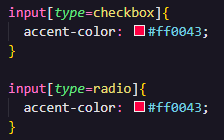

Trabalhando com o Accent Color
A propriedade CSS accent-color define a cor do destaque dos elementos. Um destaque aparece em elementos como <input> do tipo = "checkbox" ou tipo = "radio". Segue o exemplo:
Teste 1 [checkbox]:
Teste 2 [radio]:
Como colocar cores nos botões de input:
